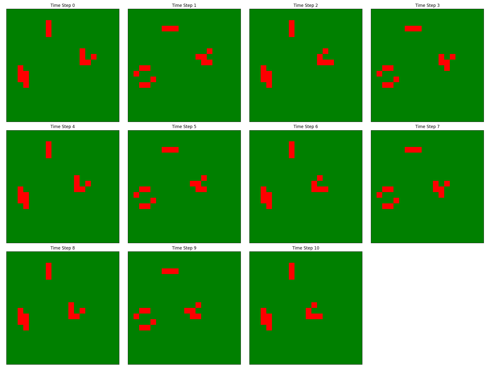

Game of Life
Conway's Game of Life implemented on a GeoDataFrame grid.

Usage
from dissmodel.core import Environment
from dissmodel.geo import vector_grid
from dissmodel.models.ca import GameOfLife
from matplotlib.colors import ListedColormap
from dissmodel.visualization.map import Map
gdf = vector_grid(dimension=(30, 30), resolution=1)
env = Environment(end_time=20)
model = GameOfLife(gdf=gdf)
model.initialize()
cmap = ListedColormap(["white", "black"])
Map(
gdf=gdf,
plot_params={"column": "state", "cmap": cmap, "ec": "gray"},
)
env.run()
API Reference
dissmodel.models.ca.game_of_life.GameOfLife
Bases: CellularAutomaton
Spatial cellular automaton implementation of Conway's Game of Life.
Cells live or die based on the number of live neighbors according to the following rules:
- A live cell with fewer than 2 or more than 3 live neighbors dies.
- A live cell with 2 or 3 live neighbors survives.
- A dead cell with exactly 3 live neighbors becomes alive.
Parameters:
| Name | Type | Description | Default |
|---|---|---|---|
gdf
|
GeoDataFrame
|
GeoDataFrame with geometries and a |
required |
**kwargs
|
Any
|
Extra keyword arguments forwarded to
:class: |
{}
|
Examples:
>>> from dissmodel.geo import vector_grid
>>> from dissmodel.core import Environment
>>> gdf = vector_grid(dimension=(5, 5), resolution=1, attrs={"state": 0})
>>> env = Environment(end_time=3)
>>> gol = GameOfLife(gdf=gdf)
>>> gol.initialize()
Source code in dissmodel/models/ca/game_of_life.py
83 84 85 86 87 88 89 90 91 92 93 94 95 96 97 98 99 100 101 102 103 104 105 106 107 108 109 110 111 112 113 114 115 116 117 118 119 120 121 122 123 124 125 126 127 128 129 130 131 132 133 134 135 136 137 138 139 140 141 142 143 144 145 146 147 148 149 150 151 152 153 154 155 156 157 158 159 160 161 162 163 164 165 166 167 168 169 170 171 172 173 174 175 176 177 178 179 180 181 182 183 184 185 186 187 188 189 190 191 | |
initialize()
Fill the grid with a random initial state.
Uses a 60/40 live/dead split with a fixed seed for reproducibility. Override this method to define a custom initial state.
Source code in dissmodel/models/ca/game_of_life.py
116 117 118 119 120 121 122 123 124 125 126 127 128 129 | |
initialize_patterns(patterns=None)
Place classic Game of Life patterns at random positions on the grid.
Parameters:
| Name | Type | Description | Default |
|---|---|---|---|
patterns
|
list of str
|
Pattern names to place. If |
None
|
Notes
Assumes a square grid. The "pulsar" pattern requires a grid
of at least 15x15 to avoid out-of-range placement.
Source code in dissmodel/models/ca/game_of_life.py
131 132 133 134 135 136 137 138 139 140 141 142 143 144 145 146 147 148 149 150 151 152 153 154 155 156 157 158 159 160 161 162 163 164 165 166 167 168 169 170 | |
rule(idx)
Apply the Game of Life transition rule to cell idx.
Parameters:
| Name | Type | Description | Default |
|---|---|---|---|
idx
|
any
|
Index of the cell being evaluated. |
required |
Returns:
| Type | Description |
|---|---|
int
|
|
Source code in dissmodel/models/ca/game_of_life.py
172 173 174 175 176 177 178 179 180 181 182 183 184 185 186 187 188 189 190 191 | |
setup()
Build the Queen neighborhood for the grid.
Source code in dissmodel/models/ca/game_of_life.py
112 113 114 | |